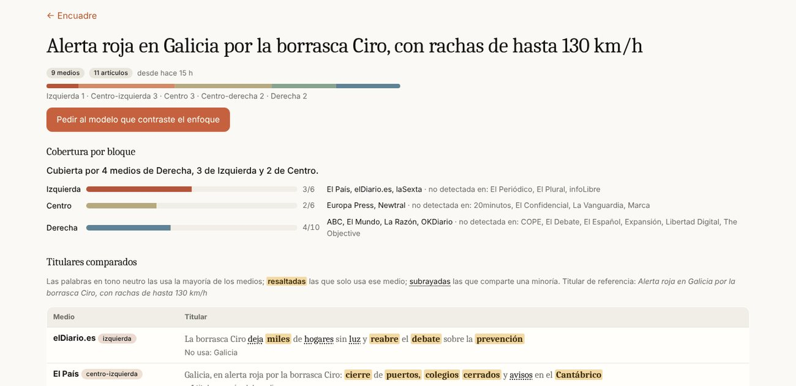
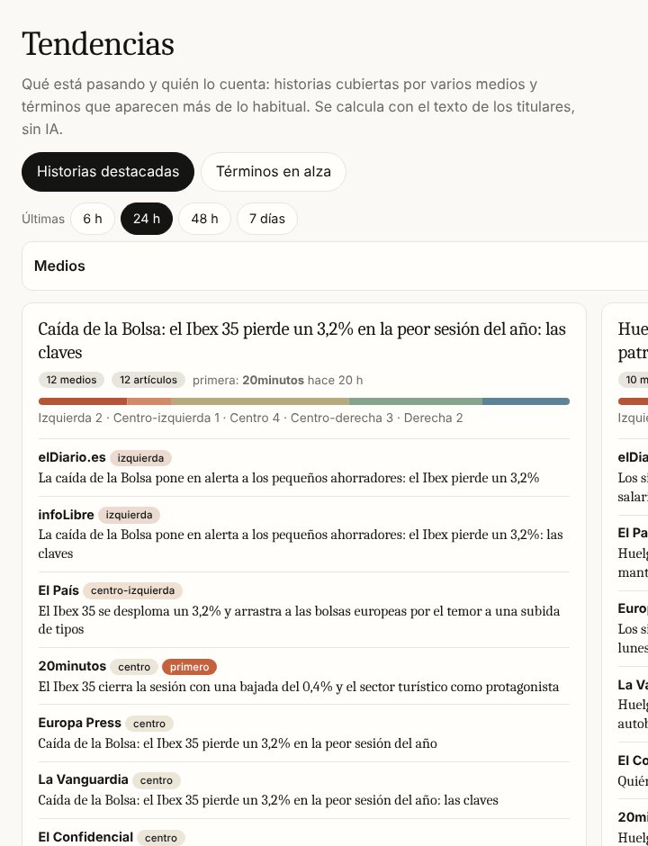
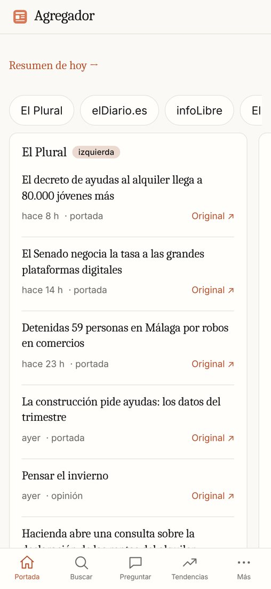
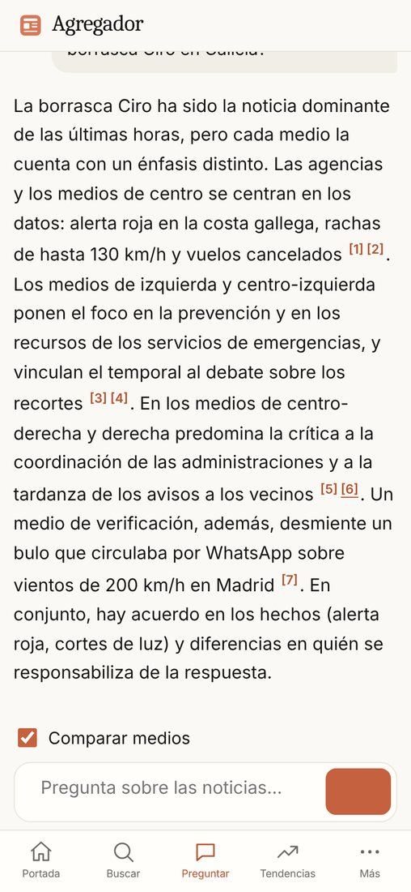
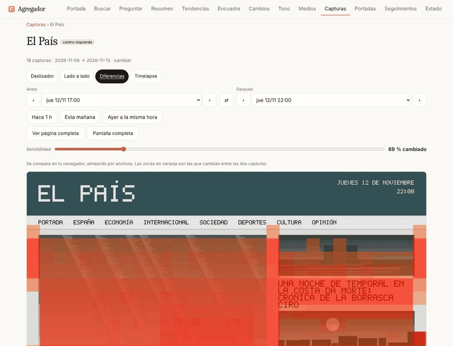
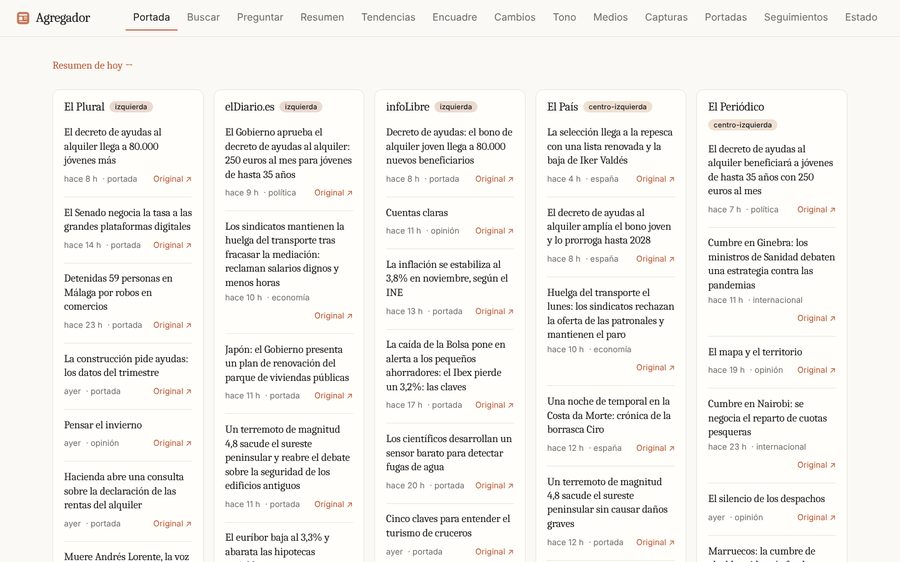

Qué resuelve
Tres pilares
Recoger
Ingesta RSS con texto completo, capturas de portada 3 veces al día, qué titular abre cada medio y cambios de titular tras publicar.
Entender
Tendencias e historias entre medios, encuadre (vocabulario distintivo y diff de titulares), puntos ciegos, ficha de cada medio, tono con un modelo pequeño y resumen diario.
Preguntar y avisar
Búsqueda híbrida (FTS + vectores) y RAG con citas con modo «comparar medios». Alertas a ntfy, Telegram o webhook cuando una historia la cubren ≥ N medios.
Lo diferencial
Comparar, no solo agregar
- Quién la dio primero y quién no la cubre.
- Palabras que solo usa un bloque: log-odds con prior de Dirichlet (Fightin' Words), sin LLM.
- Stealth edits: antes → después con diff de palabras.
- Portadas en el tiempo: deslizador, mapa de diferencias y timelapse.
- Etiquetas editables y subjetivas; las del modelo, siempre «estimaciones».
Cómo se hizo
Proceso
- Requisitos y contratos primero; 17 paquetes independientes.
- ~20 subagentes en paralelo, cada uno dueño de sus ficheros; integración y medición propias.
- Investigación previa de productos y métodos (
docs/INVESTIGACION.md).

Encuadre · titulares comparados y quién no la cubre
Tendencias · historias entre medios


Capturas · mapa de diferencias entre dos portadas
Portada · columnas por medio, de izquierda a derechaArquitectura
La Pi hace lo ligero
Despliegue
Docker en tu Raspberry
- Imagen multi-arch (CI → GHCR),
composecon límites, sin root y FS de solo lectura. - Perfiles Chromium bajo demanda y HTTPS (Caddy) para la PWA.
- Backups, retención,
/metricsy/readyz; guía endocs/DESPLIEGUE.md.
Honestidad
Límites y siguientes pasos
- Chat, embeddings y tono probados con servidores simulados: falta Ollama real.
- arm64 compilado; imagen probada en amd64: falta correr en la Pi.
- Las capturas usan datos de demostración ficticios.
- Siguiente: conjunto de oro, veto manual de historias, consultas como feeds.